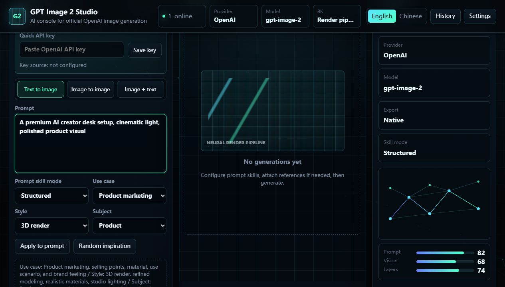
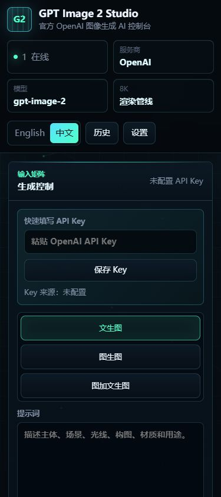

Uses the official base URL by default and keeps real keys out of tracked config.
Official OpenAI image API workbench
GPT Image 2 Studio
A local AI image console with official OpenAI routing, a large prompt-skill library, 1K to 8K export planning, reference-image workflows, and PSD helpers.
More than an API form.
The studio wraps GPT image generation with prompt skills, export controls, reference images, local history, and public-safe configuration.
Use-case, style, and subject skills turn rough ideas into structured image directions.
Text-to-image, image-to-image, and image-plus-text flows in one local console.
1K to 8K presets, native/upscaled labels, readable mirrors, and optional PSD layers.
A large built-in image-generation skill library.
The public OpenAI version keeps the Skill-edition prompt workflow and integrates image-generation skill presets from EvoLinkAI/awesome-gpt-image-2-API-and-Prompts.
10
use-case skills for product, social, posters, game assets, thumbnails, diagrams, and more
16
style skills including photography, cinematic, 3D render, pixel art, ink, retro, and cyberpunk
15
subject skills covering people, products, interiors, landscapes, vehicles, typography, charts, and backgrounds
Interface guide for real generation sessions.
The interface keeps prompt controls, skills, preview state, model status, and export metadata visible without turning into a heavy editor.


Public-safe by default.
The repository version is designed for open-source publishing: no bundled secret, no third-party provider fields, and a local ignored config file for real credentials.
Set key locally
Use `OPENAI_API_KEY` or save credentials into ignored `config.local.json`.
Build the prompt
Combine user intent with image-generation skills for structured GPT Image 2 direction.
Export results
Save images, readable output mirrors, and optional Photoshop layer files.